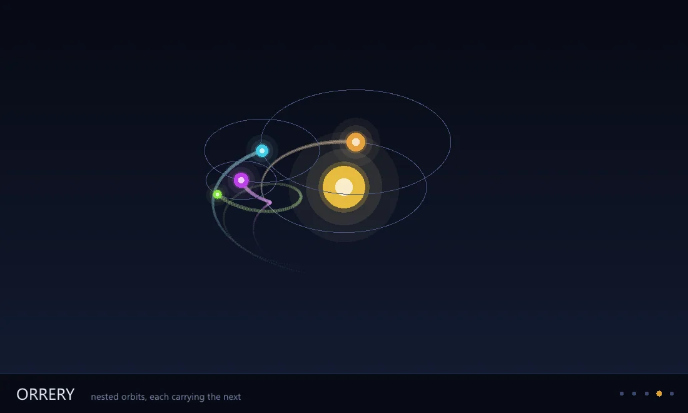

Graphics
One Zig engine across twelve lanes, text, colour, cartography, GPU, under one governed system.
6 Strong · 3 Solid · 2 Partial · 1 Emerging
Measured against: Skia · D3 · Graphviz · Folders: base/graphics(opens in a new tab) · The guide to this area's functions

Rethought from first principles
What Softanza kept from what works, and what it rethought, as the library wrote it down in its design documents and narrations.
The Softanza wayGraphics is not a new engine: it is the GPU layer Softanza already owns, taught to draw as well as compute.
Kept from the best practice
- Text shaping is delegated to HarfBuzz and bidirectional order to SheenBidi. Correct Arabic shaping is a specialty built over many years, not something to rewrite. source(opens in a new tab)
- Windows on all three desktop systems come from GLFW, a small proven library, instead of three hand-written windowing layers. source(opens in a new tab)
- The colour system keeps proven ideas. Each shade step names its job (surface, border, text), and every fill comes with a paired colour readable on it. source(opens in a new tab)
Rethought
- Computing and drawing share one GPU device, so a simulation feeds the picture without copies. In one test, 16 bytes per frame went to the card instead of 1.7 MB. source(opens in a new tab)
- Unicode text is required from day one, with Arabic as the acceptance test. One layout serves every output, so the vector and pixel pictures cannot disagree. source(opens in a new tab)
- Every drawing can always become SVG with no GPU, so pictures can be produced and checked anywhere. Without a device, a PNG request is refused and counted. source(opens in a new tab)
- Colour ramps are computed in OKLCH, so each step is evenly lighter and never out of order. Contrast becomes a number that can make a theme fail. source(opens in a new tab)
Most of the field ships one lane well: Skia renders, D3 charts the web, Graphviz lays out graphs, spatstat does the statistics and draws nothing. Softanza is one Zig engine behind declarative Haro faces that reaches across twelve of those lanes at once; its advantage is being coherent across twelve lanes under one governed colour and text system, which no single competitor is.
What a crafter does with it, and what stands out
- coherent across twelve lanes under one governed colour and text system
- Arabic kashida justification at font-declared points
- the rare lane where a graphics library also computes the statistics it draws
- compute and render zero-copy on one wgpu device
What is owed
- general paths, curves & transforms
- complete the chart family
- colour-blindness simulation
- PDF export & the raster floor
The Softanza way, run
What Softanza does differently in this area, shown by code taken from its narrations and guards, and run for this page.
The Arabic spelling of Softanza is shaped into one right-to-left run of eight glyphs, and placed between Latin words it splits into three runs.
# the guard's fixture: a committed Arabic font subset
cFixture = "../gpu/fixtures/amiri_arabic_subset.ttf"
oF = new stzFont(cFixture)
cAr = char(0xD8)+char(0xB3) + char(0xD9)+char(0x88) + char(0xD9)+char(0x81) +
char(0xD8)+char(0xAA) + char(0xD8)+char(0xA7) + char(0xD9)+char(0x86) +
char(0xD8)+char(0xB2) + char(0xD8)+char(0xA7)
chk("Arabic measures positive (a real shaped advance)", oF.WidthOf(cAr, 24) > 0)
chk("Arabic is ONE visual run", oF.RunCountOf(cAr, 24) = 1)
chk("mixed script is THREE runs", oF.RunCountOf("abc " + cAr + " xyz", 24) = 3)
chk("8 Arabic codepoints shape to 8 glyphs", len(oF.GlyphsOf(cAr, 24)) = 8)[OK] Arabic measures positive (a real shaped advance) [OK] Arabic is ONE visual run [OK] mixed script is THREE runs [OK] 8 Arabic codepoints shape to 8 glyphs
run on 2026-10-01 21:17 inside the library at commit 0e72e2e2c; taken from base/test/graphics/graphics_faces_narrated.ring(opens in a new tab)
Legibility is a number that can say no: mid-grey text on white is refused, black on white passes, and a colour on itself is refused.
chk("mid-grey on white is REFUSED", NOT StzIsLegible("#999999", :White))
chk("black on white passes", StzIsLegible(:Black, :White))
chk("a colour on itself is refused", NOT StzIsLegible(:Danger, :Danger))[OK] mid-grey on white is REFUSED [OK] black on white passes [OK] a colour on itself is refused
run on 2026-10-01 21:17 inside the library at commit 0e72e2e2c; taken from base/test/graphics/gg_color_c3.ring(opens in a new tab)
The articles of this area (2)
- Softanza Eye Sees the Invisible: Unmasking Hidden Unicode Characters 2025
- Softanza Ploting System: Where AsciiArt Meets DataViz 2025
The lanes, one by one
Lanes and their notes are quoted as they were read at the source, on Read from the source on 2026-09-15.
The functions, by what they do
Testing and checking
- IsSound SOUND IS NO ERROR -- the house's one answer, as in stzFrameGraph, and for the same reason: the findings are NAMED now, so the report that ingests them can read a severity at all. in stzMaterialGraph
composed example
o1 = new stzMaterialGraph() o1.TakesColor(:warm) o1.TakesColor(:cool) o1.TakesScalar(:sharp) o1.AddNode(:final, [ :Op = :Mix, :In = [ :shaded, :warm, :rim ] ]) o1.AddNode(:rim, [ :Op = :Fresnel, :In = [ :sharp ] ]) o1.AddNode(:shaded, [ :Op = :Multiply, :In = [ :cool, :lit ] ]) o1.AddNode(:lit, [ :Op = :Lit, :In = [ 0.25 ] ]) o1.Emits(:final) o1.Compile() ? o1.IsSound() #--> 1
composed from the signature, run for this page - IsOpen state --------------------------------------------------------------- TRUE until the user closes it (the X button, Alt-F4) or Close() is called. This is the `while` condition of every frame loop. in stzWindow
- IsRtlParagraph TRUE when the paragraph's own base direction is right-to-left -- which decides where the caret sits past the last character. in stzFont
Replacing and setting
- SetParent A parent that does not exist, or an instance parented to itself, is REFUSED. A cycle is broken and COUNTED (CyclesRefused) rather than hung on -- a graph the caller built wrong must not freeze the frame. in stzScene
composed example
o1 = new stzScene(1100, 660) ? o1.SetParent(2, 5) #--> 0
composed from the signature, run for this page - SetRegion Panning a viewer over a huge diagram is the same call with a different origin, which is why this is one feature and not two. in stzCanvas
- SetPickTag A tag rather than a shape index, because a node is several commands -- a fill, a stroke, a label -- and every one of them is the same node to a reader pointing at it. Zero is "no identity", which is what backgrounds and decorations keep. in stzCanvas
- SetSvgIdent REFUSES a name that is not an XML name rather than escaping it. A name that arrives as `a b"c` and leaves as `a b"c` is one the consumer cannot write down or select on -- the mangling would be discovered by them and the refusal is discovered here. in stzCanvas
- SetBackground canvas-wide state in stzCanvas
- SetLight A directional light: the direction it SHINES (so 0,-1,0 is noon), its colour, and the ambient that fills the shadows. in stzScene
- SetCamera Eye and target in scene units. Field of view, near and far are optional -- 45 degrees over 0.1..200 suits most scenes. in stzScene
- SetMaterial oScene.SetMaterial(oMaterial, [ :base = "#e0a030", :glow = 0.6 ]) oScene.ClearMaterial() # back to forward-lit in stzScene
- SetSize Resize from code. The size lands at the next Poll(), which is also where the swapchain reconfigures -- so this drives exactly the path a dragged window edge drives, and that is why it exists: without it the resize path could only ever be tested by a person with a mouse. in stzWindow
- SetVSync presentation knobs -------------------------------------------------- VSync ON (the default) caps the loop at the monitor's refresh and never tears. OFF runs as fast as the card allows -- the honest way to MEASURE frame cost, and the wrong way to ship. Answers FALSE when the card refuses the mode rather than pretending it changed. in stzWindow
Removing
- ClearParent Detach: the instance keeps its LOCAL transform and becomes a root. in stzScene
composed example
o1 = new stzScene(1100, 660) ? o1.ClearParent(2) #--> 0
composed from the signature, run for this page - ClearRegion Back to the whole picture. in stzCanvas
- ClearSvgIdent Back to no identity -- the next shapes belong to no element. in stzCanvas
Adding
- AddRect adding shapes in stzCanvas
composed example
o1 = new stzCanvas(1240, 1000) o1.AddRect(2, 5, 2, 2) ? o1.Content() #--> <svg xmlns="http://www.w3.org/2000/svg" width="1240" height="1000" viewBox="0 0 1240 1000"> #--> <rect x="2" y="5" width="2" height="2" fill="rgb(255,255,255)"/> #--> </svg>
composed from the signature, run for this page - AddMesh paVerts is flat -- x, y, r, g, b, a per vertex, pixel space, channels 0..255. paIndices is 0-based triangle indices into it. Both tiers carry it: the GPU draws the triangles through the ordinary shape pipeline (no new shader, no extra draw call), and ToSVG() emits one <polygon> per triangle -- exact for flat-coloured UI geometry, an approximation for a gradient mesh, where the GPU interpolates and SVG cannot. in stzCanvas
- AddText (pnX, pnY) is the BASELINE origin -- where the text sits, not its box. in stzCanvas
- AddImage Both tiers carry it: the GPU draws a textured quad, and ToSVG() embeds a base64 PNG -- so a picture with a spectrogram in it is still one self-contained file that needs no device. in stzCanvas
- AddEllipse The primitive the DIAGRAM layer was missing. Of graphviz's 24 node shapes, twenty are a circle, a rect or a polygon -- all already here -- and the remaining four (ellipse, egg, cylinder, doublecircle) all need this one. Tessellated engine-side, on the same segment bound as the circle, so a stroked ellipse traces exactly the filled one. in stzCanvas
- AddPolyline paPoints is flat: [ x1,y1, x2,y2, ... ] in stzCanvas
- AddRoundRect A ROUNDED rectangle -- the visual signature of every diagram graphviz draws with style=rounded, which is what an org chart looks like. in stzCanvas
- AddGradientRect A rectangle whose fill runs from one colour to another; bVertical picks the axis. in stzCanvas
- AddVerticalText A Latin word inside a column stands upright here, one letter under the next, where a reader would expect it lying on its side. That is named as a limit in SOFTANZA_GRAPHICS_PLAN.md rather than implied. in stzCanvas
- AddJustifiedText The engine elongates first and shares whatever is left over the spaces, so the line lands on the width exactly. A width no greater than the text's own leaves the text alone: this stretches, and it never compresses. in stzCanvas
- AddFallback The chain is ORDERED and the font itself is always asked first, so a fallback never takes a glyph the author's own font could have drawn. Adding the same font twice does nothing; a font cannot fall back to itself, and neither refusal is silent. in stzFont
- AddNode declaring the graph ------------------------------------------------- paSpec: [ :Op = :Mix, :In = [ ... ] ] An input is a NODE name, a declared colour/scalar/texture name, a builtin written "@normal.y", or a plain NUMBER. in stzMaterialGraph
and 1 more in the reference
Ordering and moving
- MoveTo transform state (kept apart from what is drawn) in stzScene
Converting
- ToPNG Four is the knee and the rest is a bad trade: five through seven buy 1.3% for another 2.4 ms, and nine spends 5.1x the time of one to beat four by 4%. So four is the default and the dial is exposed, because a caller writing one file for a page and a caller writing nine hundred for a test suite are not answering the same question. in stzCanvas
- ToSVG Vector. Needs NO device -- always available, everywhere. in stzCanvas
- ToPixels Raw RGBA8 bytes of the GPU tier, for a caller that wants the pixels themselves (comparisons, compositing, tests). in stzCanvas
- ToPNGHiRes 4x MSAA antialiases a shape's edges and still beads a thin near-axis line light and dark along its length: its four samples are fixed, so a half-pixel diagonal catches them unevenly. Rendering at 2x gives sixteen effective samples where the line is and the bead fills in. It is not the default -- a test that compares rendered bytes wants the plain render, and a nine-hundred-file suite does not want to pay 4x the fill -- so a FIGURE meant to be shown asks for it and a check does not. Two is the knee; three and four are for print. in stzCanvas
- ToPixelsHiRes ...and the supersampled pixels, box-averaged down: what ToPNGHiRes writes, for a caller that wants the bytes rather than a file. in stzCanvas
- ToW emitting ------------------------------------------------------------ The material-language BODY, in the derived order. This is the artefact: a graph that emitted text you can read is a graph you can debug. in stzMaterialGraph
- ToMaterial The material itself, ready for stzScene.SetMaterial. in stzMaterialGraph
- ToCanvas the two tiers, inherited by handing back an stzCanvas in stzGraphCanvas
- ToWGSL Transpile (engine-side) and cache. Raises with the engine's refusal message on a bad description -- the transpile is documented BY ITS OUTPUT, so nothing about the shader is hidden. in stzMaterialMaker
- ToCSS exporting in stzTheme
Showing, drawing and formatting
- Format The vertex format the pipeline is built from ("3,3,2"). Derived from the attributes -- extending the mesh extends this, and nothing else. in stzMesh
composed example
o1 = new stzMesh([ :Torus, 1.5, 0.55, 96, 48 ]) ? o1.Format() #--> 3,3,2
composed from the signature, run for this page - Show Put the picture in front of a person. A real WINDOW when this machine has one (GR5) -- Escape or the X button closes it, and the picture never touches the disk. Otherwise the old path: write a PNG (or an SVG with no device) and ask the OS to open it, which is what a headless box or a machine without stz_window.dll still deserves. Returns the frame count when it opened a window, the file path when it fell back -- so a caller can always tell which happened. in stzCanvas
Walking and applying
- EachFrame Run a frame loop, calling pFunc(This) once per frame until the window closes. The anonymous function does the updating and the drawing; this only owns the pump. Escape closes, because a window with no way out is a bug in every program that ever shipped one. in stzWindow
- RunCountOf How many VISUAL runs the text breaks into: 1 for pure Latin or pure Arabic, 3 for "abc عربي xyz". Bidi made inspectable. in stzFont
- Execute Each body is called as fBody(oFrameGraph, cPassName). It asks the graph which physical target its writes landed on. in stzFrameGraph
The explanations are the ones the library gives of itself, read from its documentation comments on 2026-10-01 04:14, from the library at commit 0e72e2e2c, by the library's own stzSelfDoc over 635 class sources.
The classes of this area
- stzCanvas · 41 methods
- stzScene · 41 methods
- stzWindow · 32 methods
- stzFont · 23 methods
- stzMaterialGraph · 20 methods
- stzGraphCanvas · 18 methods
- stzFrameGraph · 16 methods
- stzMaterialMaker · 12 methods
- stzMesh · 11 methods
- stzTheme · 10 methods